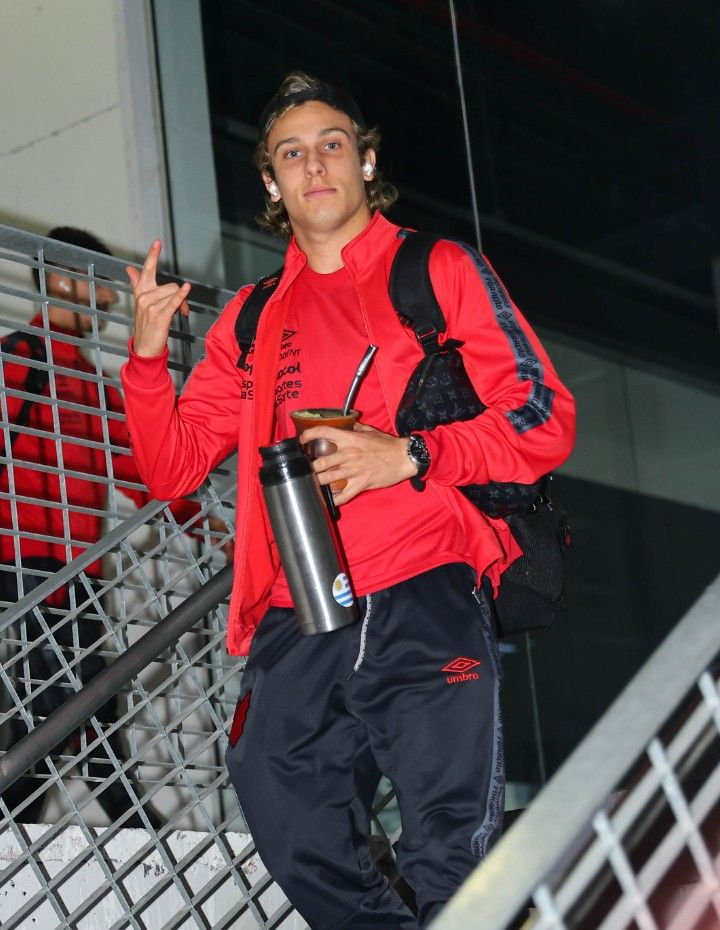

CANOBBIO - Melhor jogador
Vulgo o jogador mais lindo do Paraná
CANOBBIO - Atacante do Athlético Paranaense - Maria Clara Warumby 1ºD
INFORMAÇÕES DO JOGADOR
IDADE
Nascido dia 1 de outubro de 1998, tendo 26 anos
GOLS
4
ASSISTÊNCIAS
1
CARTÕES AMARELOS
3

Hitória do jogador
O meia-atacante de 23 anos começou a carreira no Fénix, no país natal, aos 17 anos de idade. O destaque foi instantâneo e, em 2018, foi contratado pelo Peñarol. Foram 125 pelo clube, com duas taças do Campeonato Uruguaio e uma Supercopa do Uruguai. O sucesso o levou para a seleção nacional.